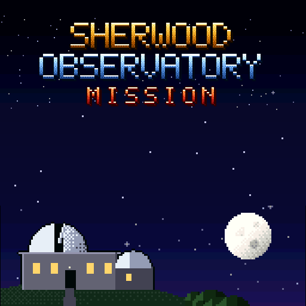

A rogue A.I. has seized the observatory. Find the 9 code fragments in 6 hours.
| D-pad ◀ ▶ | Run |
| D-pad ▲ (hold) | Search furniture · ride a lift up |
| D-pad ▼ | Call a lift · ride down |
| B (or A / Y) | Somersault jump |
| START | Start the game · pause / resume |
| X or SELECT | Pocket computer (password & map), in the main lift |
| Main lift | ▲ ▼ change level · ◀ ▶ enter a room |
Keyboard: arrows, X = B, Z = A, S = Y, A = X, Enter = Start, V = Select. Bluetooth game controllers work too.
Tip: in Safari use Share → Add to Home Screen for a full-screen app. No sound? Check the iPad volume.
Read the full README